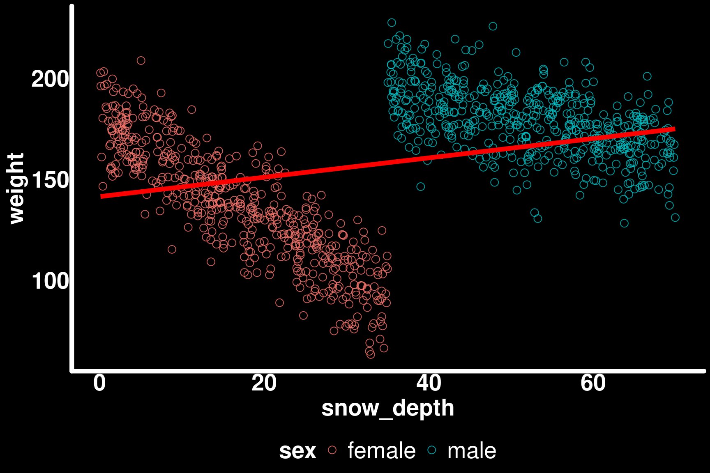
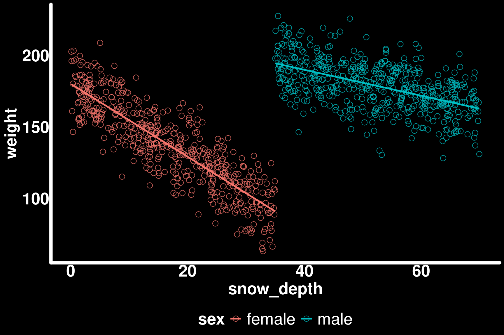
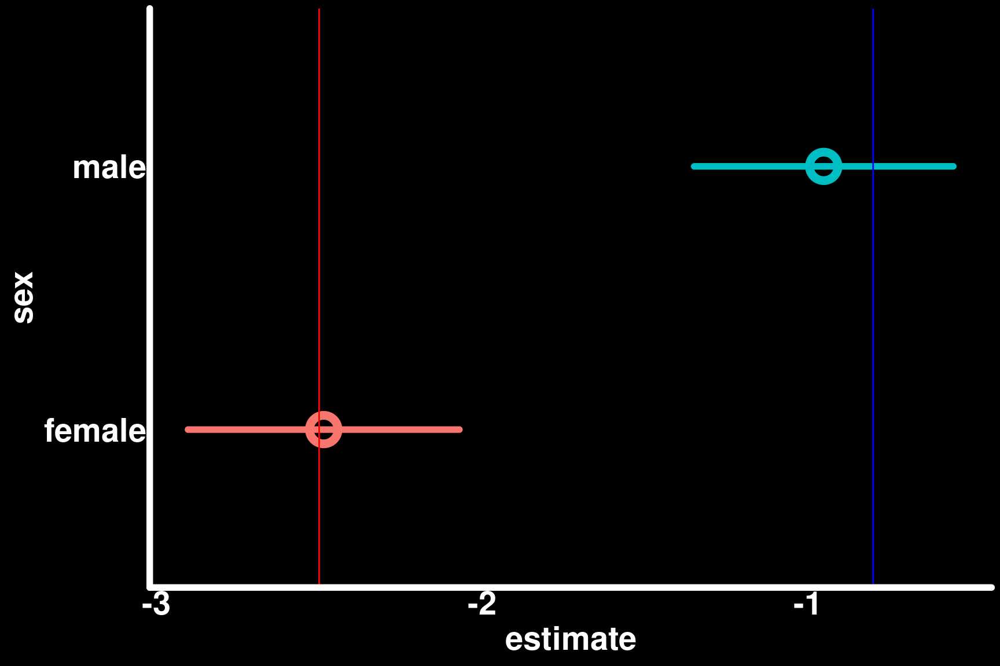
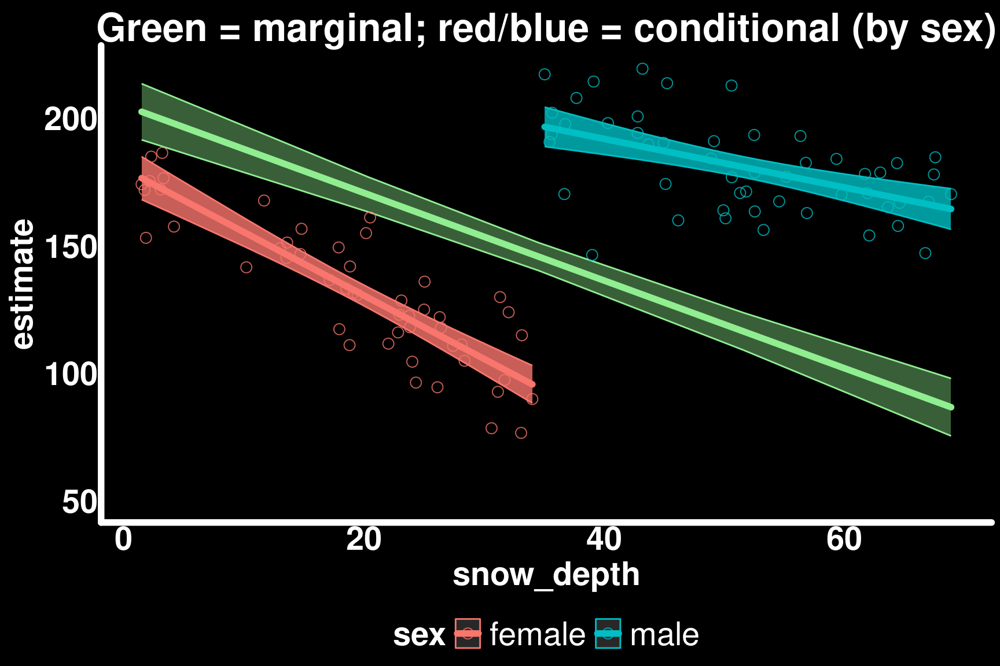
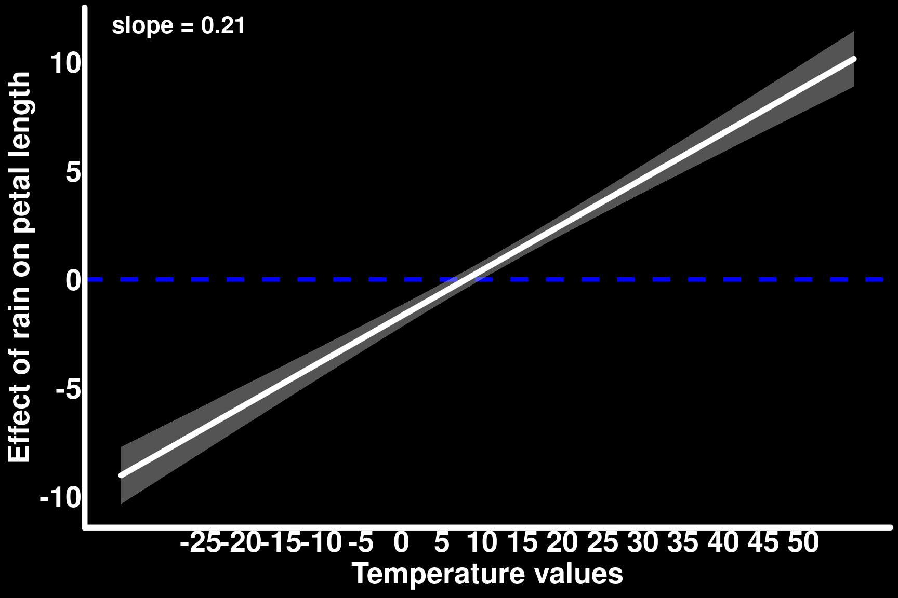
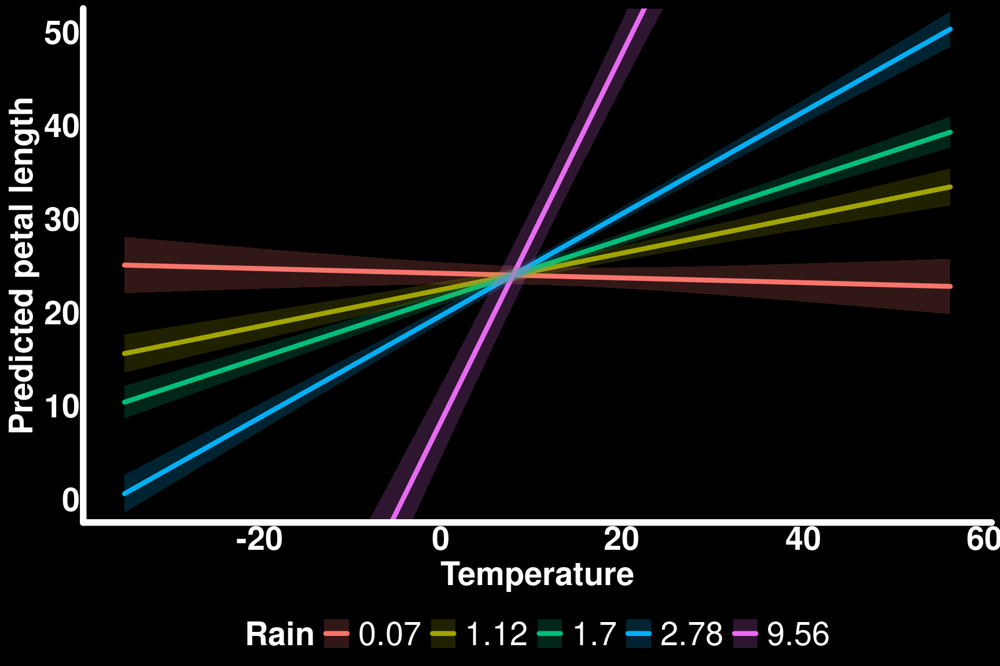
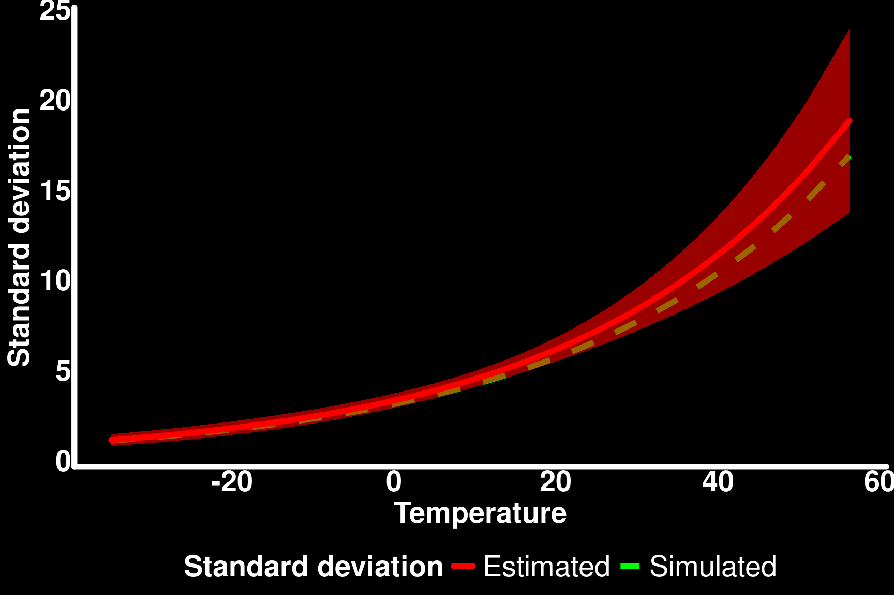

library(tidyverse) # Data manipulation and plotting
library(glmmTMB) # Generalized linear (mixed) models
library(marginaleffects) # Compute marginal/conditional effects
library(patchwork) # Combine multiple plots
library(GGally) # Pairwise plots
# Set ggplot2 theme
black_theme <- theme(
axis.line = element_line(linewidth = 2, lineend = "round", color = "white"),
panel.grid = element_blank(),
panel.background = element_rect(fill = "black", color = NA),
axis.ticks = element_blank(),
axis.text = element_text(size = 21, face = "bold", color = "white"),
axis.title = element_text(size = 21, face = "bold", color = "white"),
plot.title = element_text(size = 25, face = "bold", color = "white"),
plot.background = element_rect(fill = "black", color = NA),
legend.background = element_rect(fill = "black", color = NA),
legend.text = element_text(size = 21, color = "white"),
legend.title = element_text(size = 21, face = "bold", color = "white"),
legend.position = "bottom"
)
theme_set(black_theme)
# Set global default for geom_point shape
update_geom_defaults("point", list(shape = 1, size = 3, alpha = 0.8))
# silence marginaleffects warnings about glmmTMB
options(marginaleffects_safe = FALSE)
set.seed(4127)Understanding Interactions in Regression Models
Categorical × numerical and numerical × numerical interactions, marginal vs. conditional effects, and common pitfalls in ecological data
Allen Bush-Beaupré
2026-09-16
Welcome
This workshop is adapted from a two-part tutorial series on interactions in regression models:
Audience: graduate students and researchers in ecology who fit GL(M)Ms and want to interpret interaction terms correctly.
Format: short lecture blocks, live-coded examples, and practice exercises (look for the 🧪 slides).
Learning objectives
By the end of this workshop you should be able to:
- Explain what an interaction term means for a categorical × numerical model and for a numerical × numerical model
- Distinguish conditional effects from marginal effects, and choose the right one for a research question
- Recognize Simpson’s Paradox and sampling bias as threats to naive interpretation
- Use
marginaleffects(predictions(),slopes(),avg_predictions(),avg_slopes(),hypotheses()) to extract and test the quantities you actually care about - Visualize interaction effects (slope-by-moderator plots, five-number-summary predictions, response surfaces) and know their trade-offs
Setup
Part 1 — Categorical × Numerical Interactions
What is an interaction?
For predictors \(X_1\) and \(X_2\):
\[Y = \beta_0 + \beta_1 X_1 + \beta_2 X_2 + \beta_3 (X_1 \times X_2) + \epsilon\]
\(\beta_3\) is the interaction coefficient. When \(\beta_3 \neq 0\), the effect of \(X_1\) on \(Y\) depends on the value of \(X_2\).
For a categorical \(X_2\) (e.g., sex) and continuous \(X_1\) (e.g., snow depth): the interaction means the slope of the continuous predictor differs between categories.
Conditional vs. marginal effects
- Conditional effects: the effect of a predictor at specific values of other predictors (e.g., the slope of snow depth for males)
- Marginal effects: the effect averaged across the distribution of other predictors (e.g., the average slope of snow depth across the whole population)
Both are legitimate; they answer different questions. Interactions are exactly where the distinction starts to matter.
Case study: Bighorn sheep
Ram Mountain, Alberta. Question: how does winter snow depth relate to spring mass in Bighorn sheep, and does it differ by sex? Males and females segregate in winter — females use lower, less snowy habitat.
n_individuals_population <- 1000
sexes <- c("male", "female")
male_intercept <- 220; female_intercept <- 180
sd_weight <- 15
male_loss <- -0.8; female_loss <- -2.5
bighorn_population <- tibble(
sex = rep(sexes, n_individuals_population / length(sexes)),
snow_depth = runif(n_individuals_population,
min = ifelse(sex == "male", 35, 0),
max = ifelse(sex == "male", 70, 35)
),
weight = rnorm(n_individuals_population,
mean = ifelse(sex == "male",
male_intercept + male_loss * snow_depth,
female_intercept + female_loss * snow_depth),
sd = sd_weight
)
)Built-in features: different intercepts, different slopes, and different snow-depth distributions by sex.
Simpson’s Paradox

Ignoring sex hides the true within-sex trends.
Pooled: snow depth looks positively associated with weight — even though both sexes lose weight with more snow.
Why? Sex is a confounder
- Within each sex: more snow → lower weight (true negative relationship)
- Between sexes: males see more snow and are heavier (confounded)
- Pooled data compares heavy, high-snow males to light, low-snow females → spurious positive trend
Within-sex trends

Within-sex trends are negative, as expected.
🧪 Exercise 1
Using bighorn_population:
- Fit
weight ~ sex * snow_depthwithglmmTMB(). Call itmod_mass_true. - From the summary, identify which coefficient represents the male slope of snow depth. (Hint: it’s not printed directly — you have to add two rows together.)
- In one sentence, explain why a naive
weight ~ snow_depthmodel (ignoring sex) would mislead a manager trying to understand the effect of a harsh winter.
(~5 minutes — discuss with a neighbor)
Sampling from the population
In practice we can’t measure everyone. Two sampling scenarios:
- Scenario 1: balanced trap, 50 males / 50 females
- Scenario 2: biased trap, 80 males / 20 females
Reading the coefficients
- Intercept: female weight at snow_depth = 0
- sexmale: male − female intercept difference
- snow_depth: female slope
- sexmale:snow_depth: male − female slope difference
Useful for hypothesis tests, not directly interpretable for “what’s the effect for males?” — that’s what marginaleffects is for.
Model coefficients
Estimate Std. Error z value Pr(>|z|)
(Intercept) 180.252394 4.5758581 39.392042 0.000000e+00
sexmale 49.686455 11.6121023 4.278851 1.878606e-05
snow_depth -2.485942 0.2124809 -11.699604 1.280491e-31
sexmale:snow_depth 1.534424 0.2937494 5.223580 1.754970e-07
attr(,"ddf")
[1] "asymptotic"Q1: Do sexes differ in spring mass?
sex Estimate Std. Error z Pr(>|z|) S 2.5 % 97.5 %
female 132 2.06 64.2 <0.001 Inf 128 137
male 181 2.06 87.6 <0.001 Inf 177 185
Type: responseThis is a marginal prediction: the model-implied mean for each sex, averaged over the observed snow-depth distribution in the sample.
Q2: Does snow depth affect mass equally by sex?
Code
slopes(mod_mass_1, variables = "snow_depth", by = "sex", vcov = TRUE) |>
ggplot(aes(x = estimate, xmax = conf.high, xmin = conf.low, y = sex, color = sex)) +
geom_pointrange(size = 1.5, lineend = "round", linewidth = 2, pch = 21, stroke = 4) +
geom_vline(xintercept = female_loss, color = "red") +
geom_vline(xintercept = male_loss, color = "blue") +
theme(legend.position = "none")
Slopes of snow depth by sex, with true simulated values as vertical lines.
Testing the slope difference
Q3: What’s the population-average slope?
avg_slopes() computes the slope for every observation, then averages:
Estimate Std. Error z Pr(>|z|) S 2.5 % 97.5 %
-1.72 0.147 -11.7 <0.001 102.7 -2.01 -1.43
Term: snow_depth
Type: response
Comparison: dY/dXMarginal vs conditional, visualized
Code
avg_pred_mass_1 <- avg_predictions(mod_mass_1, variables = "snow_depth")
pred_sex_mass_1 <- predictions(mod_mass_1, newdata = bighorn_mass_1)
ggplot() +
geom_ribbon(data = avg_pred_mass_1,
aes(x = snow_depth, ymin = conf.low, ymax = conf.high),
color = "lightgreen", fill = "lightgreen", alpha = 0.4) +
geom_line(data = avg_pred_mass_1, aes(x = snow_depth, y = estimate),
color = "lightgreen", lineend = "round", linewidth = 2) +
geom_ribbon(data = pred_sex_mass_1,
aes(x = snow_depth, ymin = conf.low, ymax = conf.high, color = sex, fill = sex),
alpha = 0.8) +
geom_line(data = pred_sex_mass_1, aes(x = snow_depth, y = estimate, color = sex),
lineend = "round", linewidth = 2) +
geom_point(data = bighorn_mass_1, aes(y = weight, x = snow_depth, color = sex)) +
guides(alpha = "none", fill = "none") +
labs(title = "Green = marginal; red/blue = conditional (by sex)") +
coord_cartesian(ylim = c(50, 220))
Scenario 2: biased sampling (80% male)
bighorn_mass_2 <- bind_rows(
bighorn_population |> filter(sex == "male") |> slice_sample(n = 80),
bighorn_population |> filter(sex == "female") |> slice_sample(n = 20)
)
mod_mass_2 <- glmmTMB(weight ~ sex * snow_depth, data = bighorn_mass_2, family = gaussian())
avg_slopes(mod_mass_2, variables = "snow_depth", vcov = TRUE)
Estimate Std. Error z Pr(>|z|) S 2.5 % 97.5 %
-1.27 0.161 -7.9 <0.001 48.3 -1.58 -0.954
Term: snow_depth
Type: response
Comparison: dY/dXConditional (by-sex) slopes stay close to truth. But the marginal slope is biased toward the overrepresented, weaker-effect sex (males).
Correcting for known sampling bias
If we know the true population sex ratio (50:50), we can average over a balanced newdata grid instead of our biased sample.
Key principle: model coefficients capture conditional relationships from your sample; marginal effects can target any population composition via newdata.
Balanced-newdata correction
# A tibble: 3 × 3
estimate conf.low conf.high
<dbl> <dbl> <dbl>
1 201. 190. 212.
2 140. 132. 149.
3 124. 113. 134.🧪 Exercise 2
Using mod_mass_2 (the biased sample model):
- Compute
avg_slopes()without correcting for sampling bias, and again with the balancednewdata_balancedgrid. - Which one is closer to the true average slope,
mean(c(male_loss, female_loss))? - Suppose instead you didn’t know the true sex ratio in the population — what additional data would you need to collect to justify a correction like this?
(~7 minutes — try it in your own script, then we’ll compare answers)
Part 1 takeaways
- Interactions → conditional effects that depend on other variables
- Simpson’s Paradox is a real risk when pooling across confounded groups
- Marginal ≠ conditional; both are valid but answer different questions
- Raw model coefficients rarely equal your research quantity of interest — use
marginaleffects - Marginal effects inherit your sample’s covariate distribution unless you override it with
newdata
Part 2 — Numerical × Numerical Interactions
The math, revisited
\[Y = \beta_0 + \beta_1 X_1 + \beta_2 X_2 + \beta_3 (X_1 \times X_2) + \epsilon\]
Regrouping terms in \(X_1\):
\[Y = \beta_0 + (\beta_1 + \beta_3 X_2)\, X_1 + \beta_2 X_2 + \epsilon\]
The slope of \(X_1\) is now itself a linear function of \(X_2\): it equals \(\beta_1 + \beta_3 X_2\). Symmetrically, the slope of \(X_2\) is \(\beta_2 + \beta_3 X_1\).
\(\beta_1\) alone is only the slope of \(X_1\) when \(X_2 = 0\) — meaningful only if zero is a meaningful value of \(X_2\). This motivates centering.
Case study: petal length
Simulated flowers; petal length as a function of temperature and rain, with an interaction.
Predictors are mean-centered: the intercept becomes the predicted response at average conditions rather than at (biologically meaningless) zero temperature/rain.
Simulating the data
n_flowers <- 200
temperature <- rnorm(n_flowers, mean = 10, sd = 15)
rain <- rgamma(n_flowers, shape = 2)
avg_petal_length <- 25.6; sd_petal_length <- 4.5
temperature_effect <- 0.4; rain_effect <- 0.9; interaction_effect <- 0.2
flower_measurements_1 <- tibble(
temp_centered = temperature - mean(temperature),
rain_centered = rain - mean(rain),
petal_length = rnorm(n_flowers,
mean = avg_petal_length +
temperature_effect * temp_centered +
rain_effect * rain_centered +
interaction_effect * temp_centered * rain_centered,
sd = sd_petal_length)
)Fit the model
Estimate Std. Error z value Pr(>|z|)
(Intercept) 25.6288031 0.28512980 89.88469 0.000000e+00
temp_centered 0.3978619 0.01753886 22.68460 6.358816e-114
rain_centered 0.8783765 0.20525261 4.27949 1.873219e-05
temp_centered:rain_centered 0.2104061 0.01379506 15.25228 1.589951e-52
attr(,"ddf")
[1] "asymptotic"Every term has a small p-value — but what do these numbers mean for our research question? Time to unpack them.
Slope of one predictor at a single value of the other
rain_centered Estimate Std. Error z Pr(>|z|) S 2.5 % 97.5 %
0 0.398 0.0175 22.7 <0.001 376.0 0.363 0.432
Term: temp_centered
Type: response
Comparison: dY/dXThis matches the temp_centered coefficient directly — because rain is centered, “at rain = 0” means “at average rain.”
Slope across the range of the moderator
Code
slopes_by_temp <- slopes(mod_flower_1,
newdata = datagrid(temp_centered = seq(min(flower_measurements_1$temp_centered),
max(flower_measurements_1$temp_centered), length.out = 30)),
variables = "rain_centered", by = "temp_centered")
trend_slope_temp <- coef(lm(estimate ~ temp_centered, data = slopes_by_temp))[["temp_centered"]]
slopes_by_temp |>
ggplot() +
geom_hline(yintercept = 0, color = "blue", linewidth = 1.5, linetype = 2) +
geom_ribbon(aes(x = temp_centered + mean(temperature), ymin = conf.low, ymax = conf.high),
alpha = 0.4, fill = "lightgrey") +
geom_line(aes(x = temp_centered + mean(temperature), y = estimate),
lineend = "round", linewidth = 2, color = "white") +
annotate("text", x = -Inf, y = Inf, hjust = -0.2, vjust = 1.5,
label = paste0("slope = ", round(trend_slope_temp, 3)),
color = "white", size = 6, fontface = "bold") +
scale_x_continuous(breaks = seq(-25, 50, by = 5)) +
labs(y = "Effect of rain on petal length", x = "Temperature values")
Effect of rain on petal length, across observed temperatures.
The interaction coefficient is exactly the slope of this line — how much the effect of rain changes per unit of temperature.
Visualizing predictions at chosen moderator values
Common choice: the five-number summary of the moderator.
Code
predictions(mod_flower_1,
newdata = datagrid(
temp_centered = seq(min(flower_measurements_1$temp_centered),
max(flower_measurements_1$temp_centered), length.out = 30),
rain_centered = fivenum
)) |>
as_tibble() |>
mutate(rain = round(rain_centered + mean(rain), 2)) |>
ggplot() +
geom_line(aes(y = estimate, x = temp_centered + mean(temperature), color = as.factor(rain)),
lineend = "round", linewidth = 1.5) +
geom_ribbon(aes(ymin = conf.low, ymax = conf.high,
x = temp_centered + mean(temperature), fill = as.factor(rain)), alpha = 0.2) +
labs(y = "Predicted petal length", x = "Temperature", color = "Rain", fill = "Rain") +
coord_cartesian(ylim = c(0, 50))
Response surfaces — use with caution
Code
predictions(mod_flower_1,
newdata = datagrid(
temp_centered = seq(min(flower_measurements_1$temp_centered),
max(flower_measurements_1$temp_centered), length.out = 30),
rain_centered = seq(min(flower_measurements_1$rain_centered),
max(flower_measurements_1$rain_centered), length.out = 30)
)) |>
as_tibble() |>
mutate(rain = rain_centered + mean(rain), temp = temp_centered + mean(temperature)) |>
ggplot(aes(x = rain, y = temp, z = estimate)) +
stat_contour_filled() +
labs(x = "Rain", y = "Temperature", fill = "Predicted petal length")
Contour bins are arbitrary and hide uncertainty — good for exploration, risky for publication-quality inference. Prefer line-and-ribbon plots when you can.
🧪 Exercise 3
Using mod_flower_1:
- Compute the slope of temperature across the observed range of rain (mirror the rain-across-temperature plot above).
- At what value of rain does the temperature effect become non-significant (CI crosses zero), if at all?
- Rewrite the research question this model could answer as a single sentence, identifying which variable is the exposure and which is the moderator.
(~7 minutes)
Interactions beyond the mean: distributional regression
Interactions don’t have to act only on the average response. glmmTMB’s dispformula lets predictors affect the standard deviation too — useful when variance itself is ecologically meaningful (e.g., reduced trait variance under stress).
Simulating heteroscedastic data
log_sd_intercept <- log(sd_petal_length)
log_sd_temp_slope <- 0.03
flower_measurements_2 <- tibble(
temp_centered = temperature - mean(temperature),
rain_centered = rain - mean(rain),
petal_length = rnorm(n_flowers,
mean = avg_petal_length + temperature_effect * temp_centered,
sd = exp(log_sd_intercept + log_sd_temp_slope * temp_centered))
)
mod_flower_2 <- glmmTMB(petal_length ~ temp_centered,
dispformula = ~ temp_centered,
data = flower_measurements_2)Checking the dispersion model
Code
predictions(mod_flower_2, newdata = flower_measurements_2, type = "disp") |>
as_tibble() -> pred_sd_temp
true_sd_temp <- flower_measurements_2 |>
mutate(true_sd = exp(log_sd_intercept + log_sd_temp_slope * temp_centered))
ggplot() +
geom_line(data = true_sd_temp,
aes(x = temp_centered + mean(temperature), y = true_sd, color = "Simulated"),
linewidth = 2, linetype = "dashed") +
geom_ribbon(data = pred_sd_temp,
aes(ymin = conf.low, ymax = conf.high, x = temp_centered + mean(temperature)),
fill = "red", alpha = 0.6) +
geom_line(data = pred_sd_temp,
aes(x = temp_centered + mean(temperature), y = estimate, color = "Estimated"),
linewidth = 2, lineend = "round") +
scale_color_manual(values = c("Simulated" = "green", "Estimated" = "red"), name = "Standard deviation") +
labs(x = "Temperature", y = "Standard deviation")
Recovered vs. simulated standard deviation of petal length.
type = "disp" retrieves predictions/slopes for the dispersion sub-model, exactly as type = "conditional" does for the mean.
🧪 Exercise 4 (challenge)
Extend mod_flower_2 by adding rain_centered and a temp_centered * rain_centered interaction to both the conditional formula and the dispformula.
- Fit the model on simulated data of your own design (or reuse the logic from
flower_measurements_2, adding a rain effect and interaction term on the log-sd scale). - Produce one plot showing how the effect of rain on the standard deviation of petal length changes across temperature.
- In plain language, describe a real ecological scenario (not necessarily plants) where an interaction on variance, rather than the mean, would be the interesting finding.
(~10 minutes — this is open-ended; there’s no single correct answer)
Part 2 takeaways
- With two numerical predictors, the interaction coefficient is the rate of change of one slope per unit of the other — not a separate slope for each group
- Centering predictors makes main-effect coefficients interpretable as “effect at average conditions”
- Plot slopes across the moderator’s range, not just the coefficient table
- Five-number-summary prediction plots are usually more honest than response surfaces (they retain uncertainty)
- Interactions can act on variance, not just the mean, via distributional regression (
dispformula)
Wrap-up and further reading
- Full write-ups with additional detail and 3D visualizations: Part 1, Part 2
marginaleffectsdocumentation: https://marginaleffects.com/- Spake et al. (2023), on interactions in GLMs: https://onlinelibrary.wiley.com/doi/full/10.1111/brv.12939
- A planned Part 3 will extend this material to non-Gaussian GLMs (non-linear link functions) and Part 4 to GAMs
Exercise solutions (instructor notes)
Exercise 1
mod_mass_true <- glmmTMB(weight ~ sex * snow_depth, data = bighorn_population, family = gaussian())- Male slope =
snow_depthcoefficient +sexmale:snow_depthcoefficient - A naive pooled model would show a positive (or attenuated) relationship due to Simpson’s Paradox: sex confounds both snow exposure and baseline weight, so ignoring it would lead a manager to underestimate (or misjudge the direction of) the harm of a harsh winter.
Exercise 2
- Uncorrected
avg_slopes()on the biased sample is pulled toward the male slope (weaker effect) because males are overrepresented - Corrected version (using
newdata_balanced) should land closer tomean(c(male_loss, female_loss)) - Without a known true ratio, you would need an independent, unbiased estimate of population sex ratio (e.g., aerial survey, camera trap monitoring not subject to the same capture bias) to justify reweighting
Exercise 3
- Mirror the code from the “slope across the range of the moderator” slide, swapping the roles of
temp_centeredandrain_centered - Answer depends on the random seed / simulated draw — have students report their own CI crossing point
- Example framing: “Does the effect of temperature (exposure) on petal length depend on rainfall (moderator)?”
Interactions in Regression Models